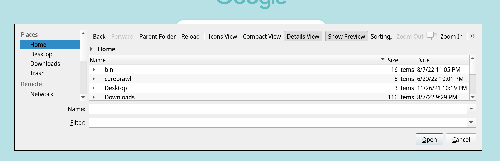

Setting the Google Chrome file manager on Linux
I’ve recently had trouble with saving files from Google Chrome: rather than use the file manager that I had configured and installed myself (thunar), Google Chrome gave me a completely different file manager, one that would not let me type the name of the file I wanted to save, and instead constantly brought me to a search bar.
In most other apps, thunar was used. That is because I have xdg-mime for inode/directory set to thunar:
xdg-mime query default "inode/directory"
Thunar.desktop
But Chrome doesn’t seem to honor that. I came to learn that Chrome will, for GTK desktop environments, us the GTK file manager, which had the bug I mentioned above.
I tried a few things, which did not change the file manager from GTK:
- uninstalled thunar, and installed dolphin to see if it’s an issue with the file manager.
- use
XDG_CURRENT_DESKTOP=kdeto see if Chrome is using that setting to find dolphin.
However, I eventually found out about xdg-desktop-portal, and a user bringing up that KDE no longer had the write file picker, either.
So it seems that Chrome somehow uses xdg-desktop-portal. Looking it up, xdg-desktop-portal seems to be primarily used for flatpaks, but does provide a Dbus interface for which an application in a sandboxed application could communicate to applications in the host (e.g. a file manager).
I didn’t find any hard evidence that xdg-desktop-portal was used in this fashion, but it does seem that the dbus interfaces exposed by the portal are used in some situations.
The next step was to get my desktop to use one of the variants of xdg-desktop-portal. The design is a little limiting in that xdg-desktop-portal has profiles for specific desktop environments and not a per-unit customizable interface that would work better for my bespoke environment. However, since I had started installng KDE components anyway, the final step for me was to install the packages necessary to completely this KDE-like environment. On Arch Linux, that was:
pacman -S kdialog
pacman -S xdg-desktop-portal-kde
pacman -S xdg-desktop-portal
And that’s it! Here’s the end result:
